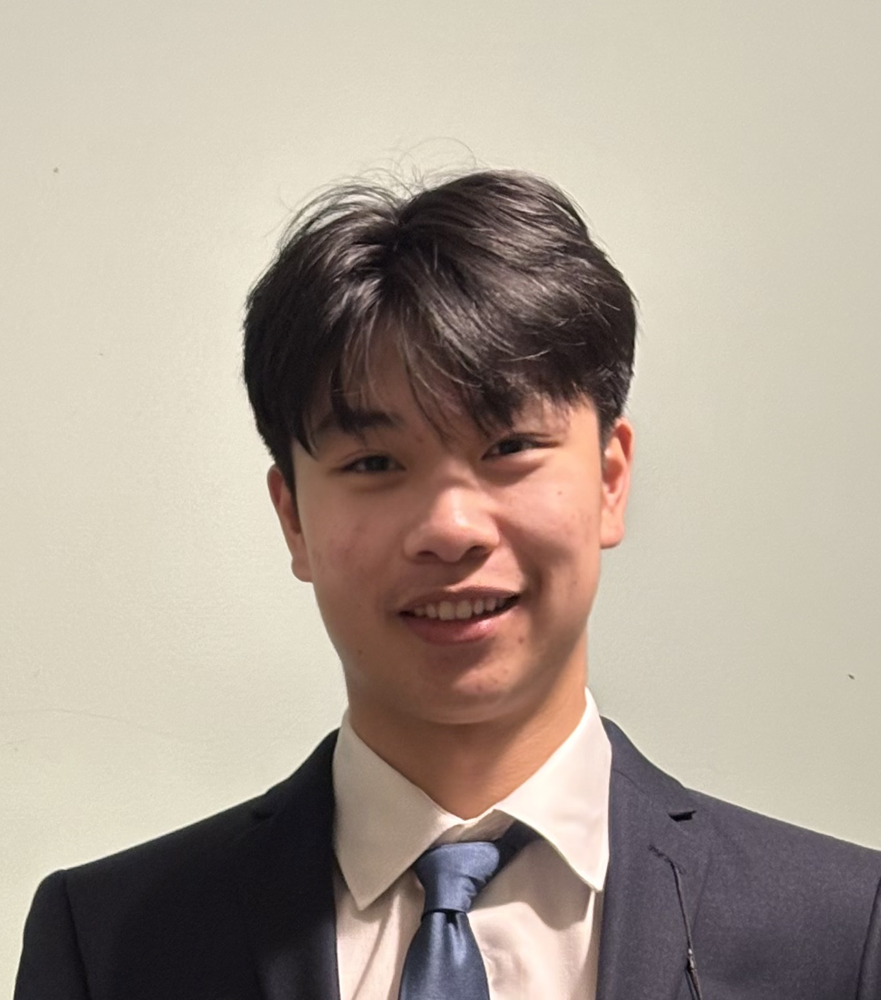
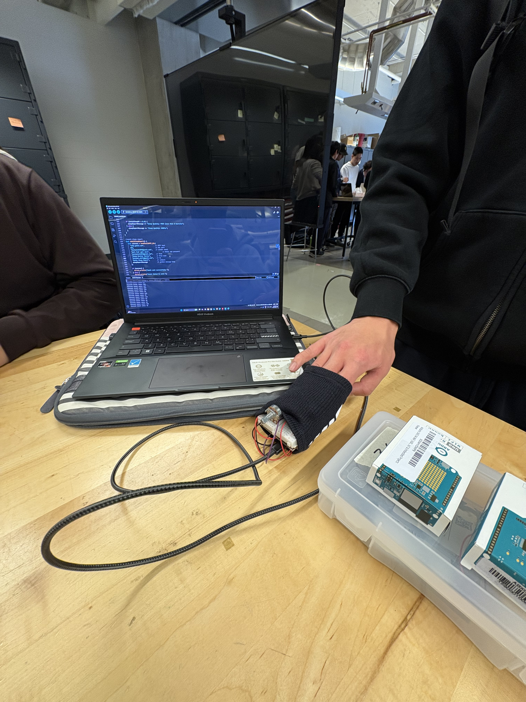

I am a first-year Electrical Engineering student at the University of Waterloo, passionate about how hardware and software converge to solve physical problems. My academic focus lies in embedded systems, IoT architecture, and digital circuitry.
My path to engineering was not traditional. Before entering Waterloo, I completed the VIU Trades Program, where I gained rigorous hands-on experience in automotive repair and electrical fabrication. While many engineers begin with theory, I began with a wrench and a multimeter.
From that experience came an unusual sense of how things fit together mechanically. Designing a circuit now involves more than lines on paper - it includes how parts go together, heat management, structural strength. Currently, I am looking for a four-month Co-op role that allows me to use hands-on insight alongside classroom knowledge.
Completed a rigorous curriculum focused on the fundamentals of electrical systems and computation.
Hospital-induced delirium affects a significant percentage of inpatients, often exacerbated by disrupted sleep cycles that go unmonitored. Existing medical-grade sleep monitors are often bulky, expensive, and invasive, making them unsuitable for continuous, low-profile tracking.
I engineered a low-cost, non-invasive wearable prototype utilizing the Arduino UNO R4 WiFi architecture. The system serves as a preliminary diagnostic tool for caregivers.
The prototype achieved a 95% transmission success rate during testing. It successfully logged 12 hours of continuous heart rate data, demonstrating that consumer-grade microcontrollers can be effectively adapted for biomedical IoT applications.

Completed during the VIU Trades Program (Sep 2024 - Feb 2025). This practical experience allows me to bridge the gap between abstract design and physical fabrication.
Wires first had to make sense on paper before anything got built - reading diagrams showed where electricity would travel and how grounding worked. Only after that clarity did hands touch materials. As pieces came together, knowing how current moves through copper mattered most; each connection demanded careful stripping, precise joining, then solid insulation. Outlets went in last, fixed firmly and tested thoroughly, turning ideas into working circuits you could see and touch.
Starting under the hood taught me how cars actually work, piece by piece. Fixing brakes wasn’t just about new pads - I checked rotors closely, watching for warping while learning how parts fit together. A single beam of light guided my hands through tangled wires inside headlights, learning how to navigate the tight space without damaging the bulb. Oil changes turned into lessons on accuracy - every step had to be exact. Machines hide their truth until you’re inside them. Small oversights grow louder, harder, faster than expected.
Tools bite into wood just like metal resists force when pushed too hard. Each cut on the machine followed numbers but responded to feel. What mattered most showed up only after pressure was applied - how material bends before it splits. Adjustments happened quietly, mid-process, without announcements. The way things fit came down to tiny shifts nobody sees. Measurements needed to be precise and accurate for trusses to be built.
A spark would start it - metal meeting flame, then splitting or joining under careful heat. Temperature had to stay within tight limits, else the shape could twist out of line. Working this way made clear what fire does to steel, up close and real. Hands needed to move carefully and precisely, never shaky, while rules kept everyone back from harm's edge.
Conducted an accessibility and usability audit of five faculty co-op community pages to identify UI/UX inconsistencies and critical accessibility failures.
Developed comprehensive content modules for a digital accessibility micro-course, focusing on accessible HTML, CSS, and inclusive web design practices. Collaborated within a cross-functional project team to establish manifestos and evaluate digital environments for strict AODA compliance and adherence to WCAG standards.
Working fast on a farm that handled huge numbers, my small group - six of us - managed more than twenty thousand animals each round. Every move had to be sharp because delays slowed everyone down, so we stayed closely linked through quick fixes and shared timing even when pressure built up.
Focusing wasn’t just about movement - it tied into keeping systems steady. Watching how machines ran helped avoid interruptions before they happened. Rules around cleanliness and disease control were followed without exception. Meeting food safety standards remained a constant priority.
Around each booking, I handled every part of setting up guest stays, stepping in whenever facility issues came up. Before anyone arrived, checks on plumbing, lights, and heating happened regularly, so nothing was missed.
Working this job sharpened how I interact with guests. When problems popped up - like sudden changes or equipment hiccups - I stepped in without delay, handling each situation smoothly. Juggling tricky reservation timelines became routine, all while keeping service quality steady, which helped earn solid feedback over time.